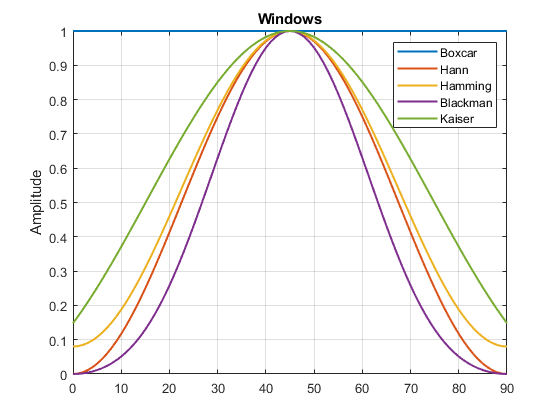
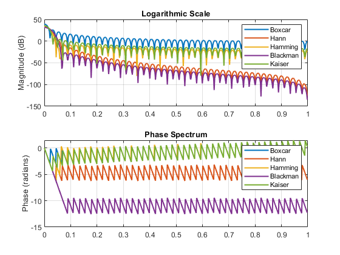
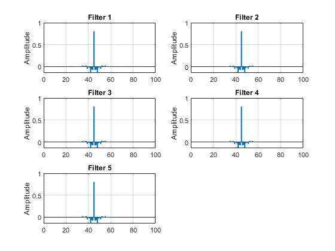
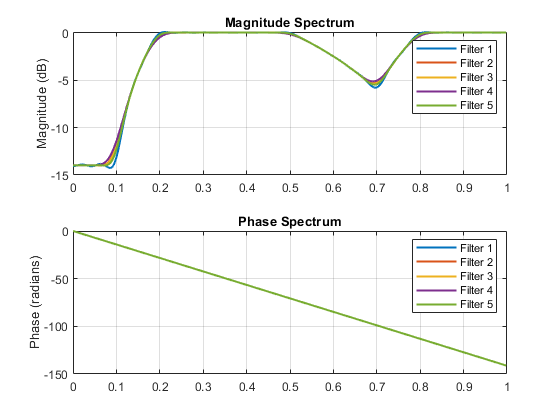
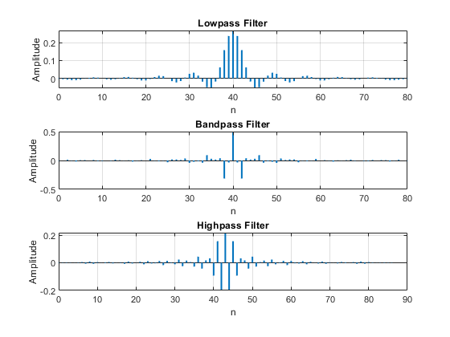
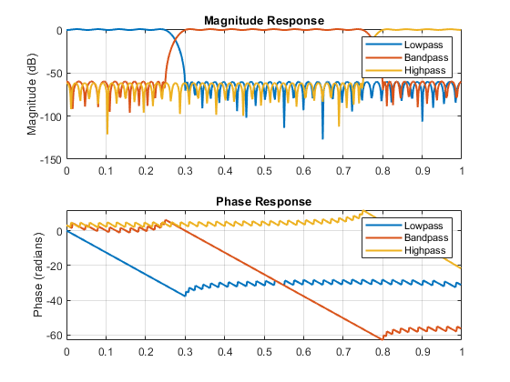
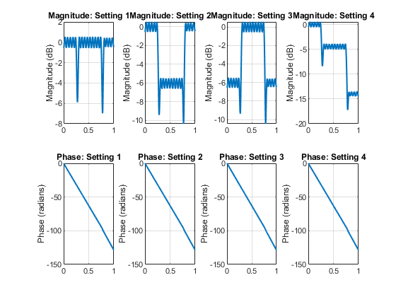
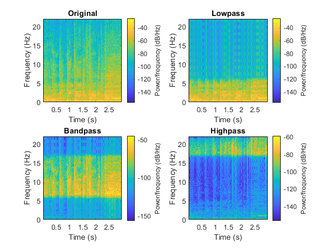

Contents
function [w,W,b1,H1,b2,H2,H3,y,S]=fname4
% De La Salle University % Electronics and Computer Engineering Department % % Course : LBYEC4A/LBYCPA4 % SECTION : % Submitted by : Jared Ong % Submitted to : Dr. Edwin Sybingco % % Exercise 4 : FIR Filter % Note: Check the instructions given in canvas
Task 1
Specify the order of the window
M=90; % Generate the time index n=0:M; % Place your code here to generate w w = zeros(M+1,5); w(:,1) = rectwin(M+1); w(:,2) = hann(M+1); w(:,3) = hamming(M+1); w(:,4) = blackman(M+1); w(:,5) = kaiser(M+1, 3.3953); % Place your code here to calculate W W = zeros(512,5); [W(:,1), omega] = freqz(w(:,1), 1, 512); for k = 2:5 W(:,k) = freqz(w(:,k), 1, omega); end % Place your code here to create the visualization of figure 1 figure(1); plot(n, w(:,1), n, w(:,2), n, w(:,3), n, w(:,4), n, w(:,5), 'LineWidth', 1.5); legend('Boxcar', 'Hann', 'Hamming', 'Blackman', 'Kaiser'); ylabel('Amplitude'); title('Windows'); grid on; % Place your code here to create the visualization of figure 2 figure(2); subplot(2,1,1); plot(omega/pi, 20*log10(abs(W(:,1)) + eps), ... omega/pi, 20*log10(abs(W(:,2)) + eps), ... omega/pi, 20*log10(abs(W(:,3)) + eps), ... omega/pi, 20*log10(abs(W(:,4)) + eps), ... omega/pi, 20*log10(abs(W(:,5)) + eps), 'LineWidth', 1.5); legend('Boxcar', 'Hann', 'Hamming', 'Blackman', 'Kaiser'); ylabel('Magnitude (dB)'); title('Logarithmic Scale'); grid on; subplot(2,1,2); plot(omega/pi, unwrap(angle(W(:,1))), ... omega/pi, unwrap(angle(W(:,2))), ... omega/pi, unwrap(angle(W(:,3))), ... omega/pi, unwrap(angle(W(:,4))), ... omega/pi, unwrap(angle(W(:,5))), 'LineWidth', 1.5); legend('Boxcar', 'Hann', 'Hamming', 'Blackman', 'Kaiser'); ylabel('Phase (radians)'); title('Phase Spectrum'); grid on; 
Task 2
specify the parameters of the function fir2 based on the given specifications
F = [0, 0.1, 0.2, 0.5, 0.7, 0.8, 1]; A = [0.2, 0.2, 1, 1, 0.5, 1, 1]; % Place your code here to design the five filters and store it in matrix b1 b1 = zeros(5, M+1); for k = 1:5 b1(k,:) = fir2(M, F, A, w(:,k)); end % Place your code here to determine the half frequency frequency representation of the five filters with 512 frequency points. Store the result in the matrix H1. The expected size of H1 is 512 x 5 H1 = zeros(512,5); [H1(:,1), omega] = freqz(b1(1,:), 1, 512); for k = 2:5 H1(:,k) = freqz(b1(k,:), 1, omega); end % Place your code here to create the visualization of figure 3 figure(3); for k = 1:5 subplot(3,2,k); stem(0:M, b1(k,:), 'Marker', 'none', 'LineWidth', 1.5); title(['Filter ', num2str(k)]); ylabel('Amplitude'); grid on; end % Place your code here to create the visualization of figure 4 figure(4); subplot(2,1,1); plot(omega/pi, 20*log10(abs(H1(:,1)) + eps), ... omega/pi, 20*log10(abs(H1(:,2)) + eps), ... omega/pi, 20*log10(abs(H1(:,3)) + eps), ... omega/pi, 20*log10(abs(H1(:,4)) + eps), ... omega/pi, 20*log10(abs(H1(:,5)) + eps), 'LineWidth', 1.5); legend('Filter 1', 'Filter 2', 'Filter 3', 'Filter 4', 'Filter 5'); ylabel('Magnitude (dB)'); title('Magnitude Spectrum'); grid on; subplot(2,1,2); plot(omega/pi, unwrap(angle(H1(:,1))), ... omega/pi, unwrap(angle(H1(:,2))), ... omega/pi, unwrap(angle(H1(:,3))), ... omega/pi, unwrap(angle(H1(:,4))), ... omega/pi, unwrap(angle(H1(:,5))), 'LineWidth', 1.5); legend('Filter 1', 'Filter 2', 'Filter 3', 'Filter 4', 'Filter 5'); ylabel('Phase (radians)'); title('Phase Spectrum'); grid on; 
Task 3
Place your code here to design the lowpass filter
delta1 = 0.0575; delta2 = 0.0009; Wp = 0.25 * pi; Ws = 0.3 * pi; [N_lp, Fo, Ao, W] = firpmord([Wp/pi, Ws/pi], [1, 0], [delta1, delta2]); N_lp = N_lp + rem(N_lp, 2); b_lp = firpm(N_lp, Fo, Ao, W); % Place your code here to design the bandpass filter Wp = [0.3, 0.75] * pi; Ws = [0.25, 0.8] * pi; [N_bp, Fo, Ao, W] = firpmord([Ws(1)/pi, Wp(1)/pi, Wp(2)/pi, Ws(2)/pi], [0, 1, 0], [delta2, delta1, delta2]); N_bp = N_bp + rem(N_bp, 2); b_bp = firpm(N_bp, Fo, Ao, W); % place your code here to design the highpass filter Wp = 0.8 * pi; Ws = 0.75 * pi; [N_hp, Fo, Ao, W] = firpmord([Ws/pi, Wp/pi], [0, 1], [delta2, delta1]); N_hp = N_hp + rem(N_hp, 2); b_hp = firpm(N_hp, Fo, Ao, W); % Place your code here to determine the frequency response of the three filters b2 = zeros(3, max([N_lp, N_bp, N_hp]) + 1); b2(1,1:N_lp+1) = b_lp; b2(2,1:N_bp+1) = b_bp; b2(3,1:N_hp+1) = b_hp; H2 = zeros(512, 3); [H2(:,1), omega] = freqz(b2(1,1:N_lp+1), 1, 512); [H2(:,2), ~] = freqz(b2(2,1:N_bp+1), 1, omega); [H2(:,3), ~] = freqz(b2(3,1:N_hp+1), 1, omega); % Place your code here to create the visualization (impulse response) of figure 5 figure(5); subplot(3,1,1); stem(0:N_lp, b_lp, 'Marker', 'none', 'LineWidth', 1.5); title('Lowpass Filter'); xlabel('n'); ylabel('Amplitude'); grid on; subplot(3,1,2); stem(0:N_bp, b_bp, 'Marker', 'none', 'LineWidth', 1.5); title('Bandpass Filter'); xlabel('n'); ylabel('Amplitude'); grid on; subplot(3,1,3); stem(0:N_hp, b_hp, 'Marker', 'none', 'LineWidth', 1.5); title('Highpass Filter'); xlabel('n'); ylabel('Amplitude'); grid on; % Place your code here to create the visualization (magnitude and phase spectrum of figure 6 figure(6); subplot(2,1,1); plot(omega/pi, 20*log10(abs(H2(:,1)) + eps), ... omega/pi, 20*log10(abs(H2(:,2)) + eps), ... omega/pi, 20*log10(abs(H2(:,3)) + eps), 'LineWidth', 1.5); legend('Lowpass', 'Bandpass', 'Highpass'); ylabel('Magnitude (dB)'); title('Magnitude Response'); grid on; subplot(2,1,2); plot(omega/pi, unwrap(angle(H2(:,1))), ... omega/pi, unwrap(angle(H2(:,2))), ... omega/pi, unwrap(angle(H2(:,3))), 'LineWidth', 1.5); legend('Lowpass', 'Bandpass', 'Highpass'); ylabel('Phase (radians)'); title('Phase Response'); grid on; 
4
alpha = [1 1 1; 1 0.5 1; 0.5 1 0.5; 1 0.6 0.2]; % Place your code here to compute for H3 H3 = zeros(512,4); for i = 1:4 H3(:,i) = alpha(i,1)*H2(:,1) + alpha(i,2)*H2(:,2) + alpha(i,3)*H2(:,3); end % Place your code here to create the visualization (magnitude and phase spectrum of figure 7 figure(7); for i = 1:4 subplot(2,4,i); plot(omega/pi, 20*log10(abs(H3(:,i)) + eps), 'LineWidth', 1.5); ylabel('Magnitude (dB)'); title(['Magnitude: Setting ', num2str(i)]); grid on; subplot(2,4,i+4); plot(omega/pi, unwrap(angle(H3(:,i))), 'LineWidth', 1.5); ylabel('Phase (radians)'); title(['Phase: Setting ', num2str(i)]); grid on; end
5
Read the audio file and store it in the first column of y
[y(:,1),Fs] = audioread('RollingInTheDeep.wav'); % Place your code here to generate y1, y2, and y3 and store them in the 2nd, 3rd, and 4th column of y y(:,2) = filter(b2(1,1:N_lp+1), 1, y(:,1)); y(:,3) = filter(b2(2,1:N_bp+1), 1, y(:,1)); y(:,4) = filter(b2(3,1:N_hp+1), 1, y(:,1)); % Place your code here to calculate the spectrogram of y and store them in the three-dimensional matrix S S = zeros(257, 1032, 4); window = kaiser(256, 3.3953); noverlap = 128; nfft = 512; for k = 1:4 [S(:,:,k), ~, ~] = spectrogram(y(:,k), window, noverlap, nfft, Fs); end % Place your code here to create the visualization (spectrogram) of figure 8 figure(8); for i = 1:4 subplot(2,2,i); spectrogram(y(:,i), window, noverlap, nfft, Fs, 'yaxis'); switch i case 1 title('Original'); case 2 title('Lowpass'); case 3 title('Bandpass'); case 4 title('Highpass'); end xlabel('Time (s)'); ylabel('Frequency (Hz)'); end
end
ans =
1.0000 0 0.0800 0 0.1480
1.0000 0.0012 0.0811 0.0004 0.1673
1.0000 0.0049 0.0845 0.0018 0.1874
1.0000 0.0109 0.0901 0.0040 0.2083
1.0000 0.0194 0.0978 0.0072 0.2298
1.0000 0.0302 0.1077 0.0114 0.2519
1.0000 0.0432 0.1198 0.0168 0.2747
1.0000 0.0585 0.1338 0.0233 0.2981
1.0000 0.0760 0.1499 0.0310 0.3219
1.0000 0.0955 0.1679 0.0402 0.3462
1.0000 0.1170 0.1876 0.0509 0.3709
1.0000 0.1403 0.2091 0.0631 0.3960
1.0000 0.1654 0.2322 0.0771 0.4213
1.0000 0.1922 0.2568 0.0928 0.4469
1.0000 0.2204 0.2828 0.1104 0.4726
1.0000 0.2500 0.3100 0.1300 0.4984
1.0000 0.2808 0.3383 0.1516 0.5242
1.0000 0.3127 0.3677 0.1751 0.5500
1.0000 0.3455 0.3979 0.2008 0.5757
1.0000 0.3790 0.4287 0.2284 0.6013
1.0000 0.4132 0.4601 0.2580 0.6266
1.0000 0.4477 0.4919 0.2895 0.6515
1.0000 0.4826 0.5239 0.3227 0.6761
1.0000 0.5174 0.5561 0.3576 0.7003
1.0000 0.5523 0.5881 0.3940 0.7239
1.0000 0.5868 0.6199 0.4316 0.7470
1.0000 0.6210 0.6513 0.4703 0.7694
1.0000 0.6545 0.6821 0.5098 0.7910
1.0000 0.6873 0.7123 0.5498 0.8119
1.0000 0.7192 0.7417 0.5899 0.8320
1.0000 0.7500 0.7700 0.6300 0.8512
1.0000 0.7796 0.7972 0.6696 0.8694
1.0000 0.8078 0.8232 0.7085 0.8866
1.0000 0.8346 0.8478 0.7462 0.9028
1.0000 0.8597 0.8709 0.7825 0.9178
1.0000 0.8830 0.8924 0.8169 0.9317
1.0000 0.9045 0.9121 0.8492 0.9444
1.0000 0.9240 0.9301 0.8791 0.9559
1.0000 0.9415 0.9462 0.9062 0.9661
1.0000 0.9568 0.9602 0.9303 0.9750
1.0000 0.9698 0.9723 0.9511 0.9826
1.0000 0.9806 0.9822 0.9685 0.9888
1.0000 0.9891 0.9899 0.9822 0.9937
1.0000 0.9951 0.9955 0.9920 0.9972
1.0000 0.9988 0.9989 0.9980 0.9993
1.0000 1.0000 1.0000 1.0000 1.0000
1.0000 0.9988 0.9989 0.9980 0.9993
1.0000 0.9951 0.9955 0.9920 0.9972
1.0000 0.9891 0.9899 0.9822 0.9937
1.0000 0.9806 0.9822 0.9685 0.9888
1.0000 0.9698 0.9723 0.9511 0.9826
1.0000 0.9568 0.9602 0.9303 0.9750
1.0000 0.9415 0.9462 0.9062 0.9661
1.0000 0.9240 0.9301 0.8791 0.9559
1.0000 0.9045 0.9121 0.8492 0.9444
1.0000 0.8830 0.8924 0.8169 0.9317
1.0000 0.8597 0.8709 0.7825 0.9178
1.0000 0.8346 0.8478 0.7462 0.9028
1.0000 0.8078 0.8232 0.7085 0.8866
1.0000 0.7796 0.7972 0.6696 0.8694
1.0000 0.7500 0.7700 0.6300 0.8512
1.0000 0.7192 0.7417 0.5899 0.8320
1.0000 0.6873 0.7123 0.5498 0.8119
1.0000 0.6545 0.6821 0.5098 0.7910
1.0000 0.6210 0.6513 0.4703 0.7694
1.0000 0.5868 0.6199 0.4316 0.7470
1.0000 0.5523 0.5881 0.3940 0.7239
1.0000 0.5174 0.5561 0.3576 0.7003
1.0000 0.4826 0.5239 0.3227 0.6761
1.0000 0.4477 0.4919 0.2895 0.6515
1.0000 0.4132 0.4601 0.2580 0.6266
1.0000 0.3790 0.4287 0.2284 0.6013
1.0000 0.3455 0.3979 0.2008 0.5757
1.0000 0.3127 0.3677 0.1751 0.5500
1.0000 0.2808 0.3383 0.1516 0.5242
1.0000 0.2500 0.3100 0.1300 0.4984
1.0000 0.2204 0.2828 0.1104 0.4726
1.0000 0.1922 0.2568 0.0928 0.4469
1.0000 0.1654 0.2322 0.0771 0.4213
1.0000 0.1403 0.2091 0.0631 0.3960
1.0000 0.1170 0.1876 0.0509 0.3709
1.0000 0.0955 0.1679 0.0402 0.3462
1.0000 0.0760 0.1499 0.0310 0.3219
1.0000 0.0585 0.1338 0.0233 0.2981
1.0000 0.0432 0.1198 0.0168 0.2747
1.0000 0.0302 0.1077 0.0114 0.2519
1.0000 0.0194 0.0978 0.0072 0.2298
1.0000 0.0109 0.0901 0.0040 0.2083
1.0000 0.0049 0.0845 0.0018 0.1874
1.0000 0.0012 0.0811 0.0004 0.1673
1.0000 0 0.0800 0 0.1480